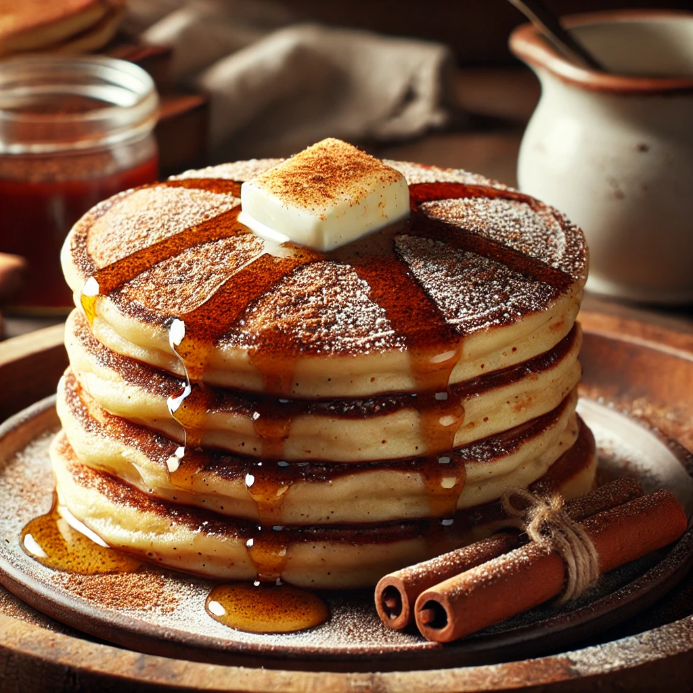

Cinnamon Pancakes Recipe

Fluffy Cinnamon Pancakes
These pancakes are soft, fluffy, and infused with warm cinnamon flavors, perfect for a cozy breakfast!
Ingredients
- 1.5 cups all-purpose flour
- 2 tbsp sugar
- 2 tsp baking powder
- 0.5 tsp baking soda
- 0.5 tsp salt
- 1.5 tsp ground cinnamon
- 1 cup buttermilk
- 2 large eggs
- 3 tbsp melted butter
- 1 tsp vanilla extract
Steps
- Prepare the Pancake Batter:
- In a large bowl, whisk together flour, sugar, baking powder, baking soda, and cinnamon.
- In another bowl, whisk buttermilk, eggs, melted butter, and vanilla extract.
- Pour wet ingredients into dry and gently mix until just combined.
- Cook the Pancakes:
- Heat a non-stick pan or griddle over medium heat and lightly butter it.
- Pour 1/4 cup of batter for each pancake.
- Cook until bubbles form on the surface, about 2 minutes. Flip and cook for another 1-2 minutes until golden.
- Serve:
- Stack pancakes, drizzle with syrup, and enjoy!